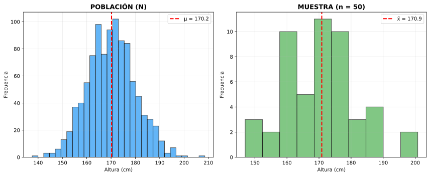
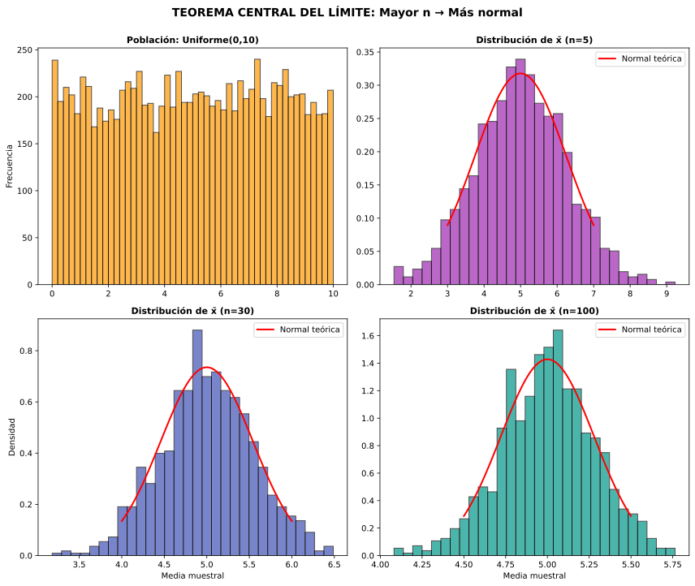

| Concepto | Parámetro (Población) | Estadístico (Muestra) |
|---|---|---|
| Media | μ (mu) | x̄ (x barra) |
| Desviación típica | σ (sigma) | s |
| Proporción | p | p̂ (p gorro) |
| Tamaño | N (mayúscula) | n (minúscula) |


Ej 1: Población: alturas en Vigo con μ = 170 cm, σ = 10 cm. Tomamos muestras de n=36 personas. ¿Cómo se distribuye x̄?
Aplicación del TCL:
Distribución de x̄:
Interpretación:
Ej 2: Con los datos anteriores, calcular P(168 < x̄ < 172).
Datos: x̄ ~ N(170, 1.667)
Tipificación (estandarización):
Límite inferior (x̄ = 168):
Límite superior (x̄ = 172):
Probabilidad:
Interpretación: Hay 77% de probabilidad de que la media de una muestra de 36 personas esté entre 168 y 172 cm.
Ej 3 (Contexto Vigo): Gasto mensual en transporte público (Vitrasa) de estudiantes: μ = 45€, σ = 12€. Muestra de 50 estudiantes. ¿Probabilidad de que x̄ > 48€?
Distribución de x̄:
Tipificación:
Probabilidad:
Interpretación: Solo 3.8% de probabilidad de que una muestra de 50 estudiantes tenga gasto medio superior a 48€. Sería un resultado poco común si μ realmente es 45€.
Ej 4: Si duplicamos el tamaño muestral (de n=36 a n=72), ¿cómo afecta a σ_x̄?
Situación original (n=36):
Duplicando muestra (n=72):
Comparación:
Conclusión: